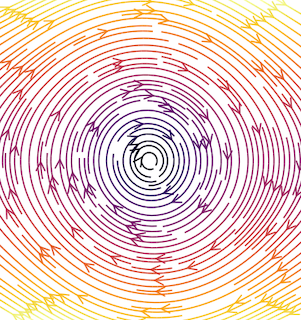

Research Interests
- Physics-informed neural network artchitecture designs
- Machine learning for time-series
- Surrogate and reduced-order modeling for physical processes
- Discovery of governing equations for interpretability
Current Main Research Projects
Physics-enhanced reduced-order modelling and inference

Mathematical modeling is one of the fundamental tools to study a dynamical system. Due to the ever-increasing complexity of processes, the dynamical models are complex and high-dimensional, making engineering designs such as control and optimization demanding. As a remedy, we make use of the observation that high-fidelity models often evolve in low-dimensional manifolds. Therefore, we seek to construct compact low-dimensional models of high-fidelity models using only data. Towards this, we have investigated the operator inference approach for general nonlinear parametric systems and have tailored it by incorporating physics, such as mass conversation. The approach is quite appealing from an industrial viewpoint. It does not require high-fidelity modeling explicitly but only needs data obtained via legacy code or simulation software. We continue to make the approach much richer in our future research in this direction. For complex transport-dominant problems, we utilize neural-network-based auto-encoders to identify low-dimensional representations, and so are dynamics. Recently, we can incorporate Hamiltonian knowledge into learning low-dimensional representations, ensuring the conversation of energy.
Physics-infomed Neural ODEs
Learning Dynamical systems from data is essential to perform engineering studies. It becomes even more critical for robotic design and climate modeling applications where first-principle knowledge is not sufficiently available. For this, we seek to learn dynamical models whose dynamics can be explained by Neural ODEs. We particularly strive to treat noisy and sparsely-sampled measurements for robust learning of dynamical models. Prior physics or empirical hypothesis can be embeded to Neural ODEs, so they can obey these key physical properties. Our main focus is on stability and energy-based Neural ODEs which has wide applications particularly in robotics and computational flow dynamics.
Discovery of interpretable dynamical models from measurements
To have more insight into a dynamical process, it is important to discover the underlying governing equations--describing dynamics--that experts can then interpret and explain. This often also yields models that are generalizable and interpretable. Towards this, we focus on the dictionary-based discovery of dynamical systems. The main principle is to construct a high-dimensional dictionary containing nonlinear candidate features and then select a few features to explain the dynamics. Since measurements can be noisy and sparse, we blend sparse regression with deep learning to facilitate the discovery of governing equations. Moreover, we work with experimental data in material science (phase-transformation) to infer and discover governing equations for phase-field modeling.